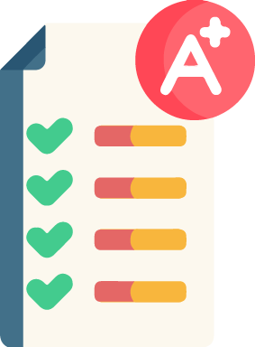

Laboratório de Avaliação
Permite que os estudantes façam a avaliação de trabalhos enviados pela ferramenta, seja dos colegas, assim como dos próprios
|

O professor deve definir os aspectos a serem avaliados e atribuir pesos a cada aspecto. |
O professor também pode fornecer documentos como exemplo para que os alunos procedam à avaliação. |
|
Também cabe ao professor verificar as avaliações realizadas pelos estudantes entre si. |
Comentários e Feedback
Além de verificar, o professor pode fornecer feedbacks e, caso julgue necessário, retificar as notas atribuídas. |
|
Vídeo Tutorial de Configuração e Aplicabilidade: |
Dicas de Uso
|